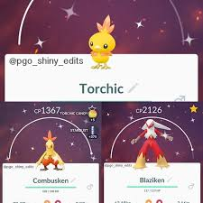

Hora Local
* A hora local é derivada do horário do seu smartphone / desktop
Home
Horários
Cronômetro
Cooldown
Encontrar Fuso
Coords
Community Day Timers
por
♤DarkShadow♤, Ace Trainer
Pokedex100 - The Best Pokémon Go server
Traduzido e editado por
MaryJane
versão original em:
[[LINK]]
19 de Maio, 2019
Pokémon:
Torchic
Ataque Especial:
Queimadura Explosiva
Bonus:
x3 Stardust
Bonus:
3 hour lures
Começa às:
15-18hs Horario local
